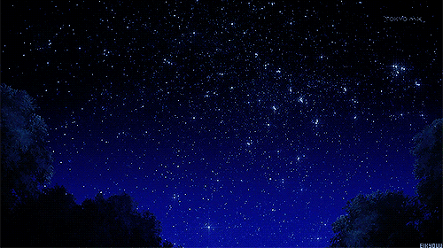
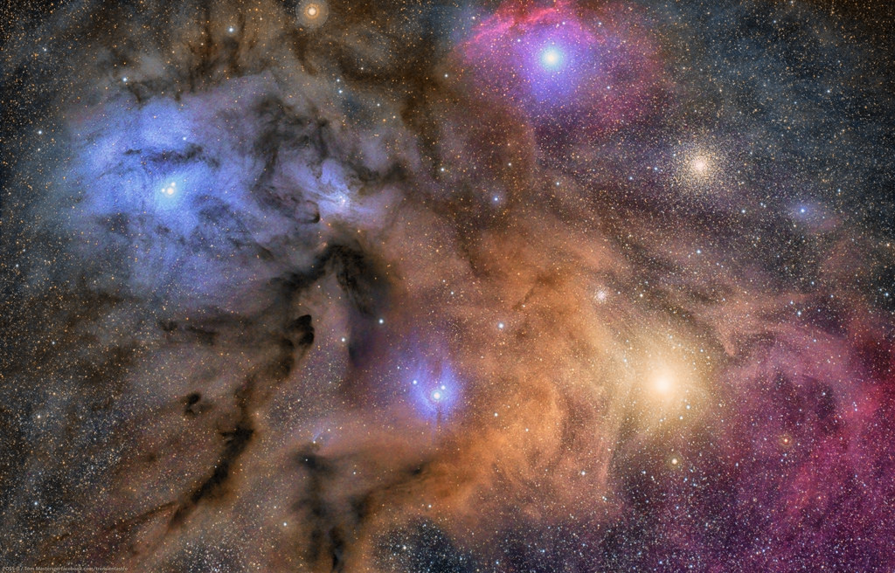
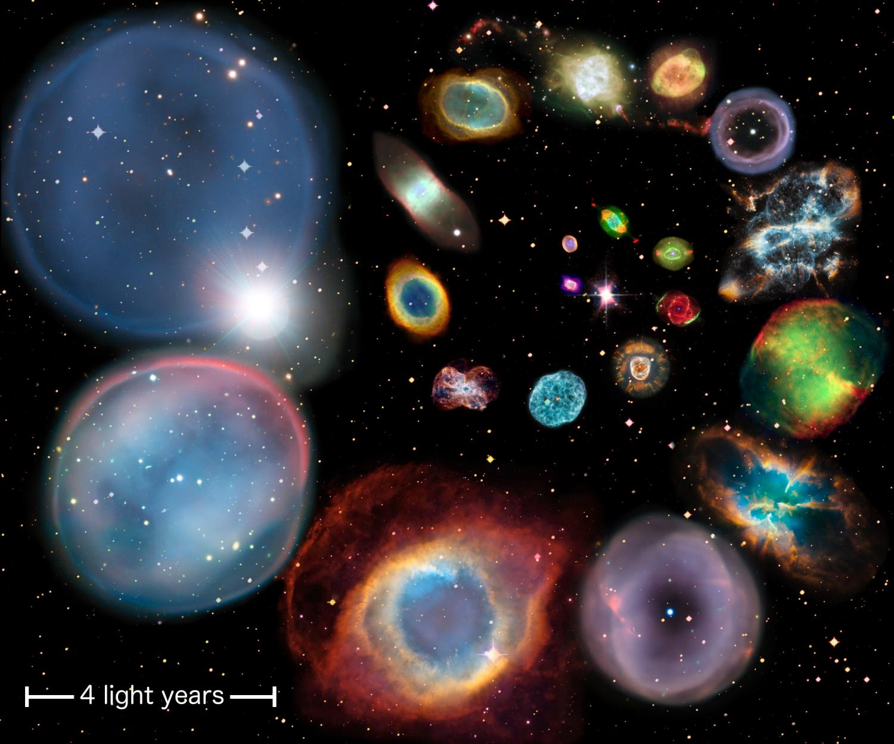
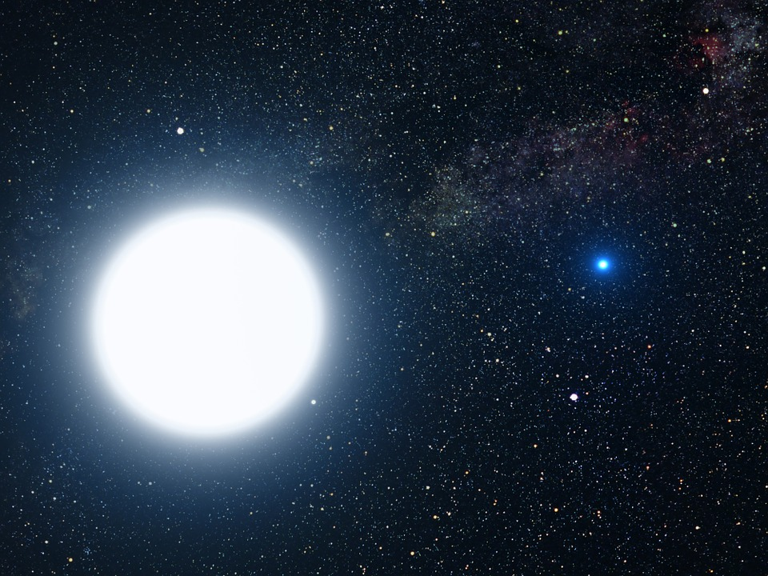

Stars
What Are Stars?
erfsoeithrsoighreiodgjiote. What exactly are stars? Well, they are literally giant balls of gas held together by its gravity emitting light. Approximately 75% of a star's composition is made of hydrogen, with the remaining 24% being helium and the 1% being a mix of several heavier elements.

Our universe alone has ten quintillion stars (100,000,000,000,000,000,000,000 stars), and only a few hundred billion are in our galaxy, the Milky Way. A star like the Sun has a lifespan of ten billion years before it uses up all of its fuel and dies.

The Sun, for example, is a star. The Sun is far bigger than Earth. 1.3 million Earths can fit inside the Sun! In contrast, the Earth seems tiny compared to the Sun. However, on an astronomical level, the Sun is considered an average-sized star. If you were to compare its size with other super giant stars in our galaxy, you would barely be able to see it.
How Stars Work
Contrary to what you may think, the redder the star, the cooler it is. White and blue stars are hotter than red-orange ones. How bright a star shines depends on its absolute and apparent magnitude. Absolute magnitude is how bright a star REALLY is. Apparent magnitude is how bright it appears from Earth, or the distance between the star and Earth. For example, the Sun is so luminous that we can't look at it, while we can look at other stars without damaging our eyes. Most other stars are actually brighter than the Sun, but because they are so far away from us, they don't appear to be that bright. On the other hand, the Sun, which is quite close to us (150,000,000km), appears brilliant. The closest star to us, other than the Sun, is Alpha Centauri A. It’s approximately 4.3 light years away from us (40 trillion kilometres).
\
Stages of a Star
The Birth of a Star
The "empty" space we see in space is not actually empty. Those empty, black regions of space hold gas and dust particles. They are attracted to each other by the force of gravity. These particles combine themselves to create molecules, and together, they are referred to as "molecular clouds". You can think of these regions as nurseries for newborn stars. There is enough material (dust and gas) in these nurseries to create thousands of stars alone.

The clouds begin to stir and its particles collide until it forms clumps. These molecular clouds increase in mass, resulting in a stronger gravitational pull. The clump's centre of gravity pulls in more particles which in turn increases mass. Eventually, the center of the clump will become quite dense and hot, forming a "protostar". The formation of a protostar takes millions of years. The protostar will continue to draw in particles and expand until its temperature reaches about seven million kelvins (seven million Celsius). At this stage, the protostar begins nuclear fusion. Its hydrogen atoms fuse, creating helium. When nuclear fusion takes place, the energy it releases is incredibly powerful. Each star has gravity acting on its centre in an inward motion, and nuclear fusion counters this by releasing energy in an outward direction. However, the output force is stronger than the inward force. When the output force is approximately equal to the input force, the protostar will stabilize and move onto its next stage: a main sequence star. This process could take tens of millions of years.
Main Sequence Stars
Red Giants
White Dwarfs
For the average star with an average mass like our Sun, they will become a white dwarf upon their death. Their outer layers will shed, turning into a colourful planetary nebula while its core will stay in space as a white dwarf. The core is extremely hot, reaching temperatures of 100,000 degree Celsius. Despite being only the size of Earth, white dwarfs are immensely dense. They’re about 200,000 times denser than Earth. Over the course of their lifetime, they will continue to cool down and shrink. Young white dwarfs that have not cooled down quite as much emit X-rays.


White dwarfs don't undergo nuclear fusion, and thus, they are considered a dead star. When gravity acts inwards on white dwarfs, there is no outward force produced by nuclear fusion that counters gravity. Yet, why don't they collapse on themselves? This question had puzzled scientists for years, until they discovered the answer. Because white dwarfs are so dense, its electrons are squeezed and forced to move into a high-energy state, resulting in electron pressure that offsets gravity. This is called electron degeneracy .
White dwarfs will continue to emit radiation. Since it cannot produce any energy and it is losing its energy at the same time, white dwarfs will cool down for hundreds of billions of years, until it becomes a black dwarf (to give you a sense of how long this will take, the universe is only 13.7 billion years old).
Neutron Stars
Super Giants
Black Dwarfs
A black dwarf is the result of a white dwarf that has completely ceased to emit light and heat. Because they‘ve stopped radiating light and heat, they‘re black and practically invisible.
The Death of a Star
After exhausting its fuel, the fate of a star largely depends on its mass.